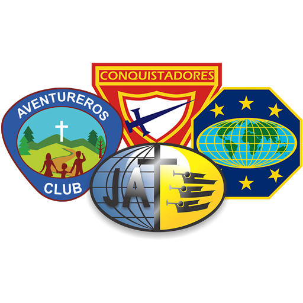
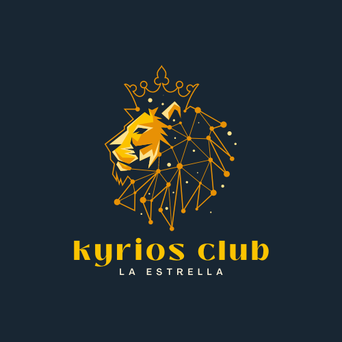
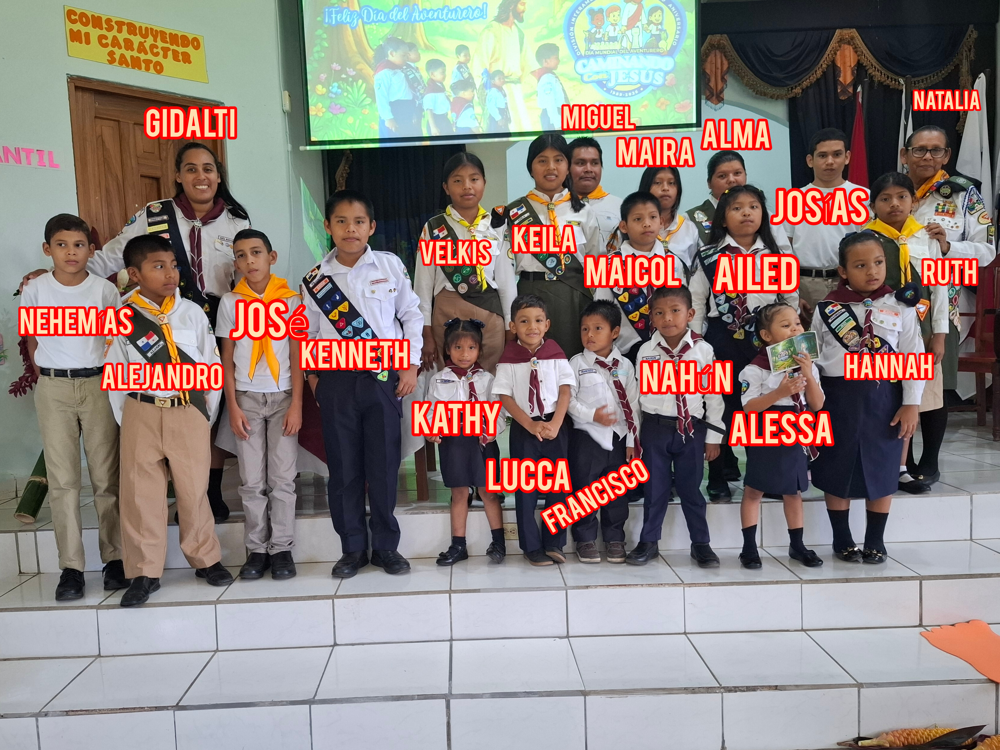
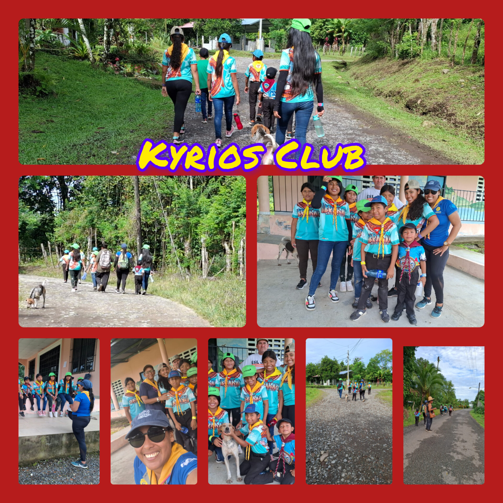
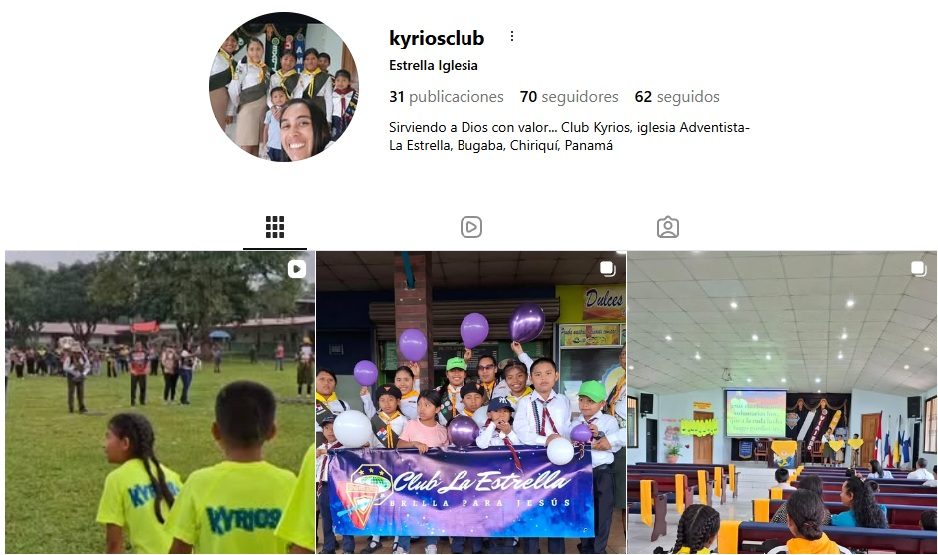

Bienvenidos al Club Kyrios

Historia del Club
La Iglesia Adventista de La Estrella siempre ha sido activa en el movimiento juvenil. A lo largo de los años ha participado como apoyo a otros clubes, como parte de escuela distrital y también como club independiente.
Algunos de los nombres utilizados anteriormente fueron Alfa y Omega, Shaddai, Deneb y Pioneros. Todos dirigidos por Natalia González exceptuando Deneb que fue un club de aventureros dirigido por Gidalti Santamaría. Durante los años de la pandemia por COVID-19 las actividades del club se detuvieron, pero Dios utilizó a la hermana Dayana Cabrera y al Pastor Ismael López para impulsar nuevamente el ministerio juvenil y reorganizar el club.

En el año 2020 se formó una nueva directiva integrada por Natalia González como directora principal, Gidalti Santamaría como directora de Conquistadores y Dayana Cabrera como directora de Aventureros. Fue entonces cuando se adoptó el nombre Kyrios, que significa "Mi Dios y Señor".
Desde entonces el club ha continuado creciendo y desarrollando actividades para fortalecer la vida espiritual, física y social de niños y jóvenes.

Misión
Nuestra principal razón de existir es preservar a nuestros chicos en los pasos del Señor, predicar el evangelio a otros y prepararnos para la eternidad con Cristo Jesús.
Fundación
2020
Iglesia a la que pertenece
Iglesia Adventista de La Estrella
Miembros del Club Kyrios
Aventureros, Conquistadores, Guías Mayores y líderes del Club Kyrios - La Estrella.

Actividades
Caminatas y Marchas



Nuestras caminatas y marchas promueven la salud, la disciplina, el compañerismo y el contacto con la naturaleza.
Campamentos


Los campamentos brindan oportunidades de crecimiento espiritual, aprendizaje, amistad y aventura.
Competencias
Síguenos para conocer nuestras actividades, campamentos, investiduras y proyectos especiales.
